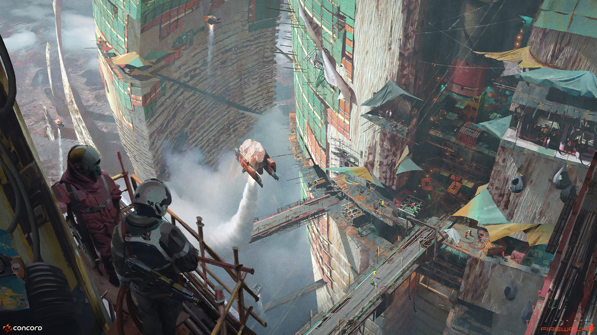
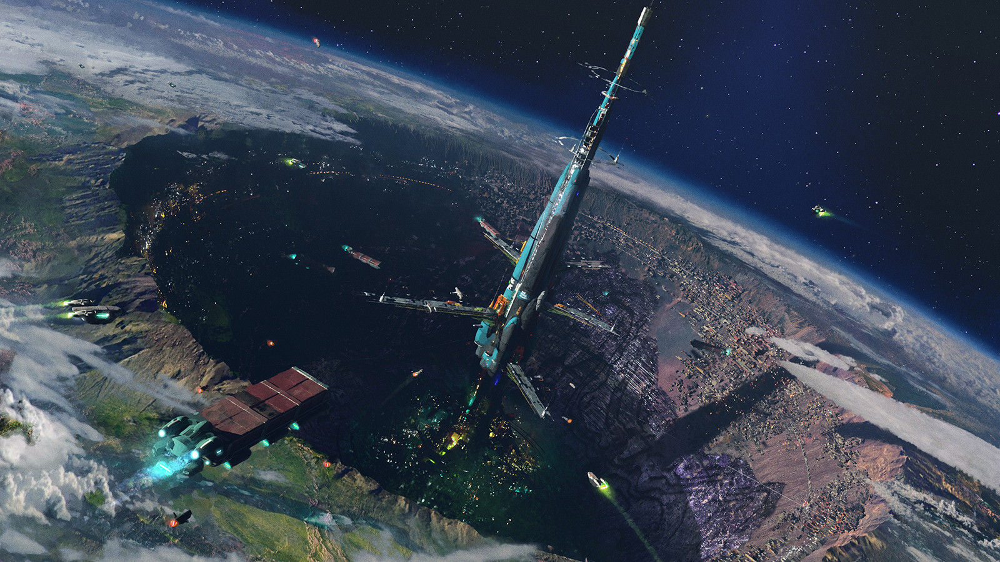
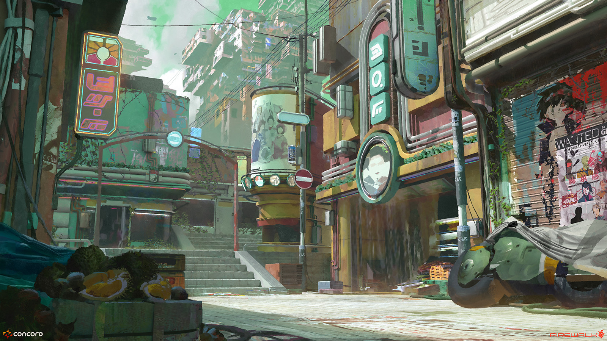
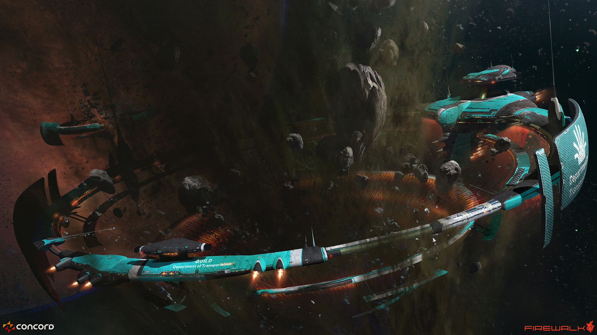
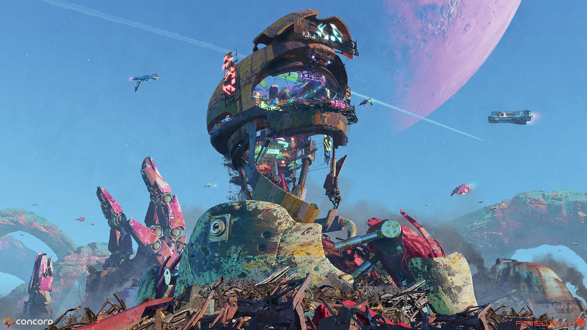
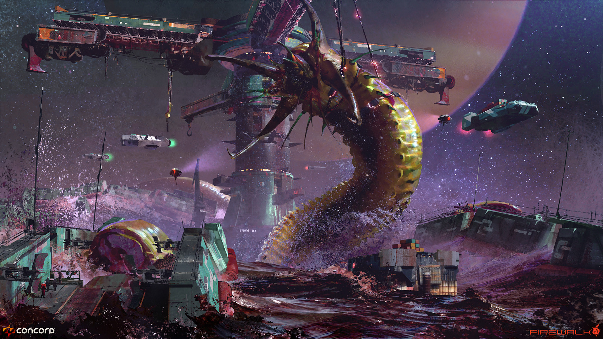
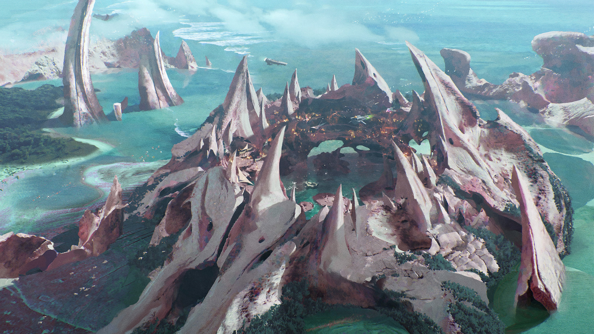
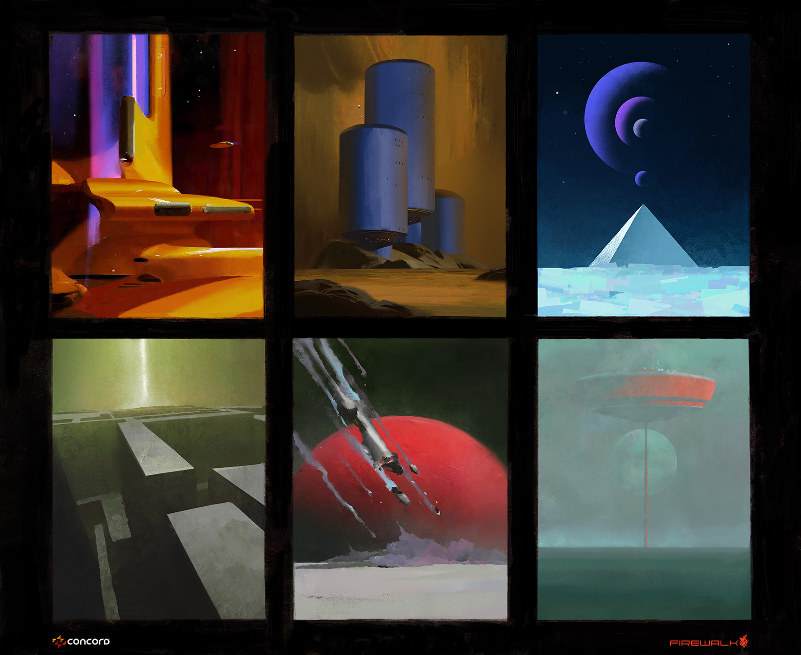
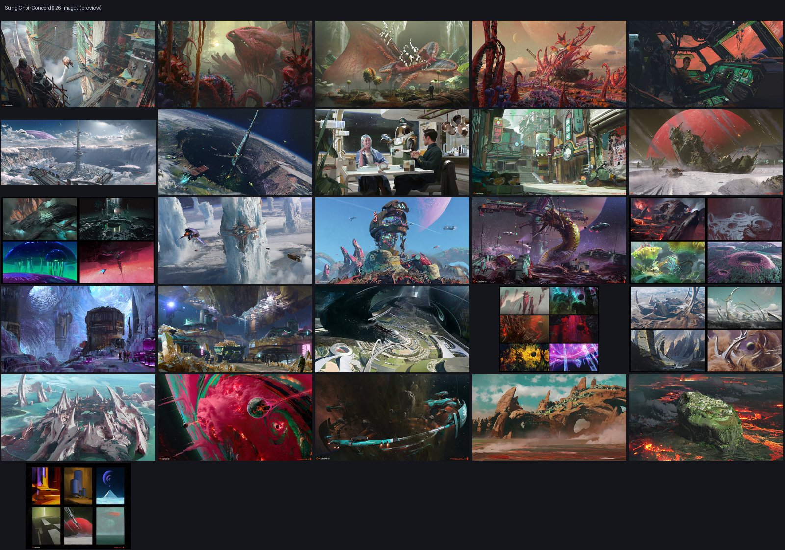

00一句话定位
硬表面工业语言（面板、脚手架、轨道环、铆接金属）× 大面积青绿锈蚀 × 少量高饱和橙 / 粉紫 / 霓虹作为视觉焦点。
成品图偏干净渲染 + 局部笔触概括；草图则压缩为厚笔触限色色块。取向是复古未来（retro-futurism，Syd Mead / John Berkey），不是写实硬科幻。
01构图规则
镜头、尺度、引导线、负空间。复刻最关键的一条是尺度层级。
1.1 尺度层级
每张图至少 2 个尺度层级；史诗全景要 3 个。L3 必须清晰可辨但不是主体——用高对比剪影、尾迹、点光把它从背景里拎出来，放在 L1 与 L2 之间的负空间或引导线上。
| 层级 | 画面占比 | 作用 | 例 |
|---|---|---|---|
| L1 巨构 | 55–80%，允许出血出框被裁切 | 建立震撼 | 环形太空港、太空电梯尖塔、废弃机器人头颅 |
| L2 人居 / 中景 | 8–18% | 建立「可居住」 | 棚户脚手架、定居点、轨道平台 |
| L3 点景比例尺 | 0.5–3% | 唯一让巨构显得「大」的东西 | 小人、小飞船、运输船、白色尾迹 |
1.2 机位库
只用这四类，别用平视中性机位。焦距：24–35mm 广角做巨构与空间纵深；50mm 做中景人居；避免 85mm 以上的压缩感（会丢掉巨构感）。
极端高俯视 45–75°
看深渊雾谷、曲面行星、环形城市（Akkar、Crater City）。地平线可抬到画面上 1/5，甚至不出地平线。
低机位仰视
巨构压在画面上方 2/3，天空留 1/3（Guild 环、Gloom 头颅）。
贴水平线
液面 / 地表齐平，主体从画面下方冲出（Leviathan）。水面线压在画面下 1/3。
座舱 / 框景
用窗框、门洞、机械手指间隙把远景框起来（Cockpit、Gloom 指缝）。
1.3 引导线
每张至少一条贯穿主线。终点必须是 L2 或 L3 的焦点，不要消失在画外没人接。
- 环形 / 弧形：轨道环、珊瑚岩环、行星边缘弧线 → 绕回主体。
- 斜线：吊桥、脚手架、下降坡道、悬崖竖线 → 高度差与危险感。
- 运动线：飞船尾迹、运输船航迹、喷发水柱 → 画外空间与时间。
- 光线线：轨灯序列、灯笼串、窗光带 → 把视线拉到兴趣点。
1.4 负空间
- 天空 / 雾层 / 深渊占 25–40%，并且是单一连续块面，不要被碎结构切割。
- 主体团块集中在一侧（左 1/3 或右 1/3）或中心偏下，避免均匀铺满。
- 负空间同时承载大气透视和唯一的点景 L3，两者叠加效率最高。
1.5 画幅
| 画幅 | 用途 | 注意 |
|---|---|---|
| 16:9 | 主力交付（1600×900 / 1920×1080） | 构图重心在中下部 60% |
| 21:9 | 巨构全景、曲面行星（1920×800） | 地平线 / 弧线放在 1/2 稍上 |
| 1:1 | 缩略图裁切（1500×1500） | 主体重心落在中央上偏 10% 的安全区 |
批量生成时先按 16:9 出图，再 central-crop 到 1:1 检查，不合格的构图直接弃用。
02光影与色彩
辨识点是「大环境软漫射 + 小光源硬点光」。色值是起稿近似值；实际复刻应从参考图取 5–8 个采样点，做成每项目专属色板，再写进 prompt 的 color key。点击色块可复制 HEX。
光型
环境光
阴天式软漫射天光 / 大气尘雾散射。阴影边缘柔，无明确投射方向。
局部光
橙色轨灯、琥珀城市灯、工业探照灯、霓虹招牌。小而硬，有衰减，在金属与雾中形成光晕。
禁止
单一大太阳硬光统治全画面；全局均匀提亮的游戏引擎平光。
明度结构
- 暗部占 35–50%，但不用纯黑：深青灰（teal-black）或紫灰（violet-grey）。
- 最高明度只留给光源本体，以及天空 / 雾。
- 中间调承担全部材质信息，低对比，避免脏灰。
大气透视 · 必须 3 层
| 层 | 饱和度 | 对比 | 色偏 |
|---|---|---|---|
| 近景 | 最高 | 最高 | 保持本色 |
| 中景 | −20~30% | 中 | 轻微推向青绿 |
| 远景 | −50~70% | 最低 | 推向青蓝 / 紫灰，加雾 |
雾用独立的 2–3 个深度叠：贴地雾 / 中层尘雾 / 高空霾。不要一张图一层雾糊到底。
可点击色板
公式 A 工业青绿 × 琥珀点光
Guild / Akkar / Crater City / streets。青绿锈蚀金属与结构 55–65% + 深灰炭黑 15–25% + 琥珀橙点光 10–20%，远景推青蓝。
公式 B 青蓝天空 × 粉紫月亮 × 霓虹内光
Gloom。亮青蓝天空 40–50% + 粉紫大月亮 10–15% + 锈蚀金属废料山 25–30% + 霓虹粉/绿/蓝 5–10%（集中在头颅内部，唯一高饱和焦点）。
公式 C 粉白有机岩 × 青绿海水 × 橙色内光
Pirate Cove / Geysers of Coral Nova。粉白/珊瑚白岩环 30–40% + 青绿海水 25–35% + 橙色定居点内光 5–10% + 高湿度白雾 15–20%。
公式 D 紫雾星空 × 青绿工业柱 × 白色探照
Leviathan。深紫雾与星空 35–45% + 青绿工业结构 25–35% + 白色/冷青点光探照 5–10% + 湿润生物表面高光 3–5%。
公式 E 限色色块 · World Sketches
每格独立 3–4 色，跨格不共享色板。可用：橙+紫 / 蓝+黄 / 红+绿 / 青+橙+米白。每格 ≥70% 给 2 个主色，剩下给 1 个点缀色。
对比策略
- 补色对比只用于焦点：青绿环境里唯一的橙色 = 视线必落点。
- 冷底暖点：大面积冷（青绿/青蓝/紫）+ 小面积暖（橙/琥珀），约 8:2。
- 同色相高明度差做结构区分（深青绿 vs 浅青绿），不要靠色相乱跳。
03材质与边缘
硬表面
- 先用 3–5 个大几何体块（环、筒、台、塔），细节只加在块面交界与轮廓线上。
- 边缘 / 接缝密（面板线、铆接、倒角、外露管线），大平面留空。禁止全表面均质噪声。
- 脚手架、吊桥、吊车、外挂舱、天线、栏杆是「有人住的旧未来」（used future）的签名元素，必须出现在 L2。
- 结构轮廓要能一眼读出前后关系，雾不能把结构吃掉。
锈蚀与生活痕迹
- 锈是青绿色氧化层覆盖在深灰金属上，出现在接缝、下缘、积水处，低频斑块，不是高频噪点。
- 老化 = 局部破损 + 补丁色差 + 积尘带。每块大面加 1–2 处，不要全加。
- 布料遮阳篷、晾晒物、彩旗、霓虹招牌、临时加建，至少出现一处。否则变成无人废墟。
有机岩 / 生物
- 刺状、环状、层叠堆积、珊瑚分枝。圆润曲面对工业直线。
- 局部湿润高光，小而亮，配冷青反光。
- 母题：结构被生物或生活二次占用。岩环中心放定居点，废弃机械当居所。
边缘控制
- 焦点区硬边：结构轮廓、光源本体、L3 剪影。
- 非焦点区软边：雾、虚化远景、笔触概括。
- 禁止全图同一边缘硬度，也禁止全图景深虚化。概念图要读结构。
两种成品度，不要混用
| 模式 | 特征 | 用在 |
|---|---|---|
| 干净渲染 | 结构边缘锐利、材质可读；只在烟雾 / 远景 / 水花处用可见笔触概括 | 城市、太空港、废墟巨构、海岸 |
| 厚笔触色块 | 3–4 色、无细节、剪影优先、笔触方向跟随形体 | 世界草图、探索图、六宫格 |
干净渲染图里也必须保留局部笔触。全图均匀锐利会像 3D 白模。
04母题
批量时按「母题 × 配色公式 × 机位」组合取样。
工业巨构
居住 / 聚落
荒野 / 异星
内景 · 载具 · 生命
几乎每张都有的氛围
04b参考图
从本地 images/ 选的非缩略图主图（is_cover_crop: false）。1:1 封面裁切只适合看色彩与材质，不在此用作构图参考。图为 Sung Choi 原作，仅作风格研究对照。









05正向提示词
拼装顺序固定，从左到右每槽只写一类信息。槽位名用英文便于对照；正文片段保持英文，便于粘贴进 Midjourney / SD 等生成器。
拼装顺序
风格锚点 → 主体 → 尺度层级 → 环境 → 光 → 色板 → 镜头 → 绘制方式 → 情绪。
[STYLE ANCHOR] + [SUBJECT] + [SCALE LAYERS] + [ENVIRONMENT] + [LIGHT] + [PALETTE] + [CAMERA] + [RENDER] + [MOOD]
可复用关键词模块
先读中文说明，再从每段 code 复制英文关键词拼进 prompt。
- STYLE ANCHOR · 风格锚点
- 70 年代复古未来概念美术，matte painting 世界观感，避免写实渲染。
retro-futuristic concept art,science-fiction environment concept art,Syd Mead and John Berkey influence,70s retro-futurism,matte painting feel,worldbuilding concept art - SCALE · 尺度
- 巨构压人；务必有小人、小飞船或白色尾迹作 L3 比例尺。
massive megastructure towering over the viewer,tiny human figures for scale,small transport ships trailing white contrails,extreme sense of scale,dwarfed by architecture - ENVIRONMENT · 环境
- teal-green（青绿）氧化金属、脚手架吊桥、生活杂物、分层尘雾与湿度雾。
teal-green oxidized industrial metal,exposed scaffolding and catwalks,elevated walkways and hanging bridges,colored awnings and lived-in clutter,dust haze in three depth layers,humid mist,rusting scrap mountains,coral-like spiked rock ring,curved planetary horizon - LIGHT · 光
- 阴天软漫射为底，琥珀轨灯 / 探照 / 内景霓虹为硬点光；写清无直射太阳。
soft diffuse overcast daylight,hard amber point lights,orange track lighting,industrial searchlights with visible light shafts,neon glow from inside,atmospheric bloom,no direct sun - PALETTE · 色板
- 主色青绿 + 炭黑暗部；琥珀橙点光；Gloom 类可加粉紫月亮与霓虹内光。
dominant teal-green with charcoal shadows,amber orange accent lights,pink-purple moon,neon pink and green interior,blue atmospheric rim light at the horizon - CAMERA · 镜头
- 极端俯视或低仰视、24mm 广角、全景深，剪影可读优先。
extreme high-angle aerial view,low-angle looking up,wide 24mm lens,deep focus,cinematic composition,strong silhouette read - RENDER · 绘制
- 硬表面边缘清晰，雾与远景保留笔触；排除 photorealism。
clean digital painting with visible brushwork in haze and distance,crisp hard-surface detailing on silhouette edges,painterly atmospheric layers,no photorealism - MOOD · 情绪
- lived-in used future：有人住、有痕迹的旧未来，敬畏与孤寂并存。
awe and quiet danger,lived-in used future,optimistic retro sci-fi,vast and lonely
参数
- 比例：主力 16:9；巨构全景 21:9；缩略图另做 1:1 裁切验证。
- 风格参考权重 0.5–0.7；结构参考 0.35–0.5。过高会锁死构图。
- 单批次 8–12 张，同一 prompt 至少跑 2 个 seed。
模板 1 · 城市
Crater City / streets in Concord · 公式 A · 陨石坑阶梯城，极端高俯视，穿梭船尾迹与步道点景小人。
retro-futuristic science-fiction environment concept art, a dense terraced city built inside a vast crater, extreme high-angle aerial view looking down the terraces, teal-green oxidized industrial megastructure with exposed scaffolding, elevated walkways and hanging bridges, amber street lights and warm window glow speckling every level, small transport ships crossing the crater trailing white contrails, tiny human figures for scale on the walkways, blue atmospheric rim glow along the curved horizon, dust haze in three depth layers, soft diffuse overcast daylight with hard amber point lights, dominant teal-green and charcoal palette with amber accents, wide 24mm lens, deep focus, cinematic composition with strong silhouette read, clean digital painting with visible brushwork in the haze, Syd Mead and John Berkey influence, lived-in used future, extreme sense of scale --ar 16:9
变体开关（三选一替换进主体或镜头段）：街景低机位 low-angle from a street level · 夜景琥珀主导 night version with dominant amber lights · 浓雾只露顶层 fog-heavy version with only the top terraces visible
模板 2 · 废墟巨构
Gloom / Akkar · 公式 B · 锈蚀机器人头颅聚落，粉紫月亮与内景霓虹，废料山与弧线尾迹飞船。
retro-futuristic concept art, a colossal rusted robot head repurposed as a settlement, low-angle view from the ground, rusting scrap mountains stacked around it, bright cyan-blue sky with a huge pink-purple moon, neon pink and green and blue interior glow spilling from openings in the head, patches of colored awnings and lived-in clutter, a giant mechanical finger half-buried in the scrap, a tiny ship arcing past with a white contrail, soft diffuse daylight with hard neon point lights, saturated 70s pop sci-fi palette, wide 28mm lens, deep focus, strong silhouette read, clean digital painting with visible brushwork in the dust, retro-futuristic worldbuilding, awe and quiet danger --ar 16:9
变体开关：废弃无光 abandoned and silent, no lights · 金色尘雾 golden dust hour with the moon low on the horizon · 头颅内市集特写 close-up on the interior market inside the head
模板 3 · 太空港
The Guild · 公式 A · 环形港穿小行星带，低机位 21:9，内缘橙色轨灯。
retro-futuristic science-fiction concept art, an enormous ring-shaped spaceport and transit ring threading through a dense asteroid belt, teal-green and dark grey hull plating with panel lines, rivets and exposed conduits, orange track lighting running along the inner face of the ring, small transport ships and tiny human figures for scale against the ring, drifting asteroids in the foreground, industrial hard-surface design, thick atmospheric dust haze separating three depth layers, soft ambient space light with hard orange point lights, dominant teal-green with charcoal and amber accents, low-angle wide 24mm composition with the ring dominating the upper two thirds, deep focus, clean digital painting with painterly haze, extreme sense of scale, "GUILD Department of Transportation" style insignia on the hull, Syd Mead influence --ar 21:9
变体开关：环内沿轨道 inside the ring, looking along the track · 坞站入港 docking bay interior with a ship arriving · 极远细弧 ring seen from far away as a thin bright arc
模板 4 · 有机海岸
Pirate Cove / Geysers of Coral Nova · 公式 C · 珊瑚白岩环、青绿海水、环内橙色内光，贴水面低机位。
retro-futuristic concept art, a ring of spiked coral-like pale pink-white rock formations rising from teal-green water, a small settlement built inside the ring glowing with warm orange interior light, high-humidity mist drifting between the spires, geysers of water and steam shooting up, wet glossy highlights on the rock surfaces, soft diffuse overcast light with hard orange point lights inside the settlement, coral white and teal-green palette with orange accents, wide 28mm lens, low-angle across the water surface, deep focus, clean digital painting with painterly brushwork in the mist, bio-organic architecture fused with hard-surface shacks, calm but dangerous, extreme sense of scale --ar 16:9
变体开关：正俯视环心 aerial view straight down into the ring · 风暴水花 storm version with grey-green water and heavy spray · 黄昏仅定居点发光 dusk version with the orange settlement as the only light source
模板 5a · 世界草图单格
公式 E · 四色限色、厚笔触块面、剪影优先，无细节与纹理，1:1 缩略探索图。
loose world exploration sketch, thick painterly block-in, flat limited color palette of only four colors, strong silhouette first, no fine detail, no texture rendering, a retro-futuristic structure reading as a simple shape against a flat sky, visible brush strokes following the form, three-color dominance with one accent, graphic and poster-like, retro sci-fi worldbuilding thumbnail --ar 1:1
模板 5b · 六宫格
公式 E · 每格独立 3–4 色，厚笔触海报式块面，无渐变。
six-panel grid of loose world exploration sketches, each panel using its own independent limited palette of three to four colors, different palette per panel (orange-purple, blue-yellow, red-green, teal-orange-white, pink-grey, green-amber), thick painterly block-in only, strong silhouettes, no fine detail, no gradients, flat poster-like shapes, retro-futuristic structures and landforms, Syd Mead and John Berkey influence on shape language --ar 3:2
变体开关：对调色板 swap panel palettes · 加粗笔触 increase brush thickness · 每格三色 reduce to three colors per panel
06负向规避
下列英文负向词可直接粘贴到 negative prompt；重点避开写实引擎感、灰棕发闷、无比例尺与全图虚化。
负向词
photorealistic, hyperrealistic, 8k octane render, unreal engine screenshot look, ray-traced reflections, dull desaturated grey-brown palette, monochrome, muddy colors, heavy film grain noise, direct harsh sunlight with long hard shadows, single sun as the only light source, flat even game-engine lighting, pure black shadows, blown-out white highlights, uniform high-frequency surface noise, gritty micro-detail everywhere, over-detailed greebles, smooth clean unscratched surfaces, brand-new glossy plastic, blurry soft focus everywhere, shallow depth of field, bokeh background, centered symmetrical flat composition, no scale reference, no human figures, no small ships, generic cyberpunk neon city, anime style, cartoon outlines, cel shading, text watermark, signature, logo overlay, UI elements, frame border, letterbox bars, extra limbs, deformed faces, distorted perspective on straight structures, warped text
07批量复刻工作流
7.1 参考图准备
- 按项目分桶：Akkar / Crater City / Guild / Gloom / Leviathan / Pirate Cove / World Sketches / Carnivorous Planet / Mining Site / Cockpit / Geysers of Coral Nova / Tempest / Dining Table / streets in Concord。
- 每桶挑 3–5 张代表图，优先
is_cover_crop: false的原图。 - 每桶做色板采样（6–8 点：主色 2 / 辅色 2 / 点光 1–2 / 暗部 1 / 远景 1）和构图标注（机位、L1/L2/L3、引导线、负空间占比）。
is_cover_crop: true的 1500×1500 只用于色彩与材质，不用于构图。
7.2 生成中怎么用
| 用途 | 手段 | 权重 |
|---|---|---|
| 锁材质与色彩 | style / palette reference | 0.5–0.7 |
| 锁机位与构图 | image reference / ControlNet depth 或 lineart | 0.35–0.5 |
| 批量微调 | img2img 低重绘 | 0.35–0.45 |
| 系列结构一致 | 固定 seed + 固定 prompt 骨架，只换变体开关 | — |
一次只锁一个变量。同时锁构图 + 色彩 + 材质会变成复制品。
7.3 一致性检查清单
点一条即勾上，只存在于本页，不上传。任一条未过，先改 prompt，不要反复抽卡。连续 3 批未过，回到 7.1 重新采样色板。
- 至少 2 个尺度层级；史诗图 3 个。
- L3 点景（小人 / 小飞船 / 尾迹）清晰可辨，且不抢主体。
- 主色占 55–65%，且为青绿 / 青蓝系（Gloom 类除外）。
- 最亮的焦点只有一处，且与点光位置一致。
- 暗部是深青灰 / 紫灰，不是纯黑。
- 有 3 层大气透视（近 / 中 / 远）。
- 至少一条贯穿引导线，终点落在焦点。
- 负空间占 25–40%，且为连续块面。
- 硬表面「边缘密、大面空」，无均质噪声。
- 至少一处生活痕迹（遮阳篷 / 招牌 / 晾晒 / 霓虹）。
- 有一处暖色点光（橙 / 琥珀 / 粉）作冷色体系的呼吸口，面积不超过 5%。
- 远景主动降饱和、提亮、简化细节，不是把近景细节等比缩小。
- 主光源方向唯一且明确，阴影朝向同一侧。
- 硬表面至少两种粗糙度对比（哑光巨构 vs 微反光边缘）。
- 有一处可读的入口（门洞 / 坡道 / 桥接 / 航道）。
- 缩到 200px 宽时，主体轮廓仍能一眼读出。
- 除 Gloom / Tempest 外，避免纯黑压边与死黑大块。
- 画面内无文字、无水印、无边框、无 UI 覆盖。
- 与同批并排看，同一世界观，但不是同一张图。
7.4 变体策略
产能分配：安全 60% / 中等 30% / 激进 10%。变体是定向偏移，不是多跑几张。
A 安全 · 保结构换表皮
只动一个非结构性变量。换色板（青绿→青蓝→青紫）、换时段（dusk / overcast noon / artificial night）、换天气（clear / light haze / thin dust，不加大雾）。固定 seed，只改 1–2 个词。
B 中等 · 保世界观换机位
高俯视 → 水平框景 → 低角度仰视。远景巨构 → 中景街区 → 近景局部。image reference 可松到 0.3，靠色板 + prompt 骨架维持一致。
C 激进 · 保风格换母题
只在项目早期做。换 L1 形态、换文明痕迹、跨桶混搭（Akkar 形体 + Gloom 光照）。多数进概念池，不直接交付。
每批记一行：批次号 / 模板号 / seed / 参考图 / 权重 / 变体档位 / 通过数。
7.5 失败模式
| 现象 | 大概率原因 | 修复 |
|---|---|---|
| 退化成写实科幻 | 负向词缺失或权重不足 | 补 octane render、unreal engine screenshot |
| 主色丢失、发灰发棕 | 色板描述太抽象 | 写出 2 主 2 辅的具体色名 + 比例 |
| 没有尺度感 | L3 被省略 | 显式加 tiny human figures、distant small ships |
| 画面平、无纵深 | 缺大气透视分层 | 补 three layers of atmospheric perspective |
| 构图居中发闷 | 未指定负空间 | off-center composition, large negative space on one side |
| 细节糊成噪声 | 过度追求精细 | no high-frequency detail, clean large planes |
| 系列图不像一套 | 同时锁太多变量 | 回到一次只锁一个变量 |
7.6 命名与归档
{桶名}_{模板号}_{机位}_{变体档位}_{seed后四位}_{版本}.png，例：Akkar_T1_highangle_A_4821_v2.png。原图与 1:1 裁切分开存放。通过的进 approved/，未通过的留在 pool/ 不删，常是下一轮色板采样的素材。
这套体系的价值不在于复制某张图，而在于把一种可辨识的视觉语言拆成可调参数：色板比例、光照逻辑、尺度层级、笔触厚度。参数在手，风格才可迁移；只记 prompt，就只是抽卡。
08版权与使用
- 用途限定：风格拆解、提示词模板与工作流仅供个人学习与风格研究，包括自学练习、风格分析、非公开的美术探索与教学讨论。
- 批量商用需自行确认版权。用于外包交付、产品内嵌、宣传物料、衍生品前，须自行核实生成工具的商用条款与输出物归属、参考图授权、以及与在先作品的实质性相似风险。本文档不构成授权、担保或法律意见。
- 风格不等于版权。色彩、光照、构图范式、笔触倾向通常不受著作权单独保护；具体作品的构图、角色、标志性建筑造型、独特纹样受保护。不要把参考图直接当 img2img 底图批量生产后宣称原创，也不要逐像素复刻单张作品。
- 提示词里的艺术家姓名（Syd Mead、John Berkey 等）只是风格语汇的简写，不代表关联、授权或背书。
- 各地对 AI 生成内容的可版权性认定不一。高价值资产建议叠加人工重绘、设计再创作，并留下创作过程。
- 向客户交付前，建议在合同中写明生成工具披露、素材来源与责任划分。
- 若某位艺术家的遗产管理方明确反对以其名义做风格描述，改用中性形式语言，例如「70 年代工业未来主义硬边块面 + 厚涂色块」。
- 因使用本文档内容产生的版权纠纷、合同违约或经济损失，由使用者自行承担。